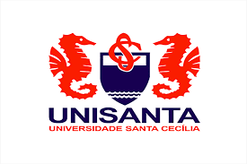

Cursos Especificos
- Treinamento Inicial de(PCA) - ANAC - 30 horas- 2019
- Manuseio de Artigos Perigosos Cat. 8 - Connect – 8 horas - 2018
- Performed Base Navegation – PBN – Connect - 7 horas - 2019
- Reduced Vertical Separation Minimum – RVSM - Connect -7 horas - 2019
- Manutenção de Linha e de Base Nível 3 B737-400 – Connect - 120 horas -2018
- Auditor da Qualidade – Connect - 20 horas - 2018
- Treinamento para formação de instrutores – Connect - 16 horas - 2018
- Familiarização da ACFT BEACH JET - Líder Signature – 40 horas - 2014
- Familiarização da ACFT HAWKER - Líder Signature – 40 horas - 2013
- Familiarização da ACFT KING AIR - Líder Signature – 40 horas - 2012
- Ramp and Transit A319/A320/A321 - TAM - 14 dias – 2010
- TS Single Aisle and Long Range Smoke Detection System on Airbus A340-500/600 Airbus 2011
- Curso de SMS - ANAC – 40 horas – 2007
- Curso de ECTM - PWC – 14 horas – 2006
- Curso de Boroscopio do motor PW120 - PWC – 8 horas – 2001
- Curso de Segurança de Voo - CENIPA - 3 semanas período integral – 2001
- Familiarização da ACFT ATR42 - Pantanal Linhas Aéreas – 40 horas – 2000
Cursos de Aprimoramento
- Conhecendo o Planner – Microsoft – 10/2020
- Excel 2019_ Fórmulas e Funções Avançadas – Linkedin – 05/2020
- Excel_ Como Criar um Dashboard Básico – Linkedin – 04/2020
- Como Criar Um Perfil No Linkedin Para Ter Sucesso Empresarial – Linkedin – 04/2020
- Descubra O Microsoft Project – Linkedin – 04/2020
- Como Aproveitar Ao Máximo O Linkedin Learning – Linkedin – 03/2020
Cursos de Gestão
- Digital Body Language – Linkedin – 07/2020
- Vídeo Interview Tips – Linkedin – 07/2020
- Técnicas Inovadoras para Atendimento ao Cliente – Linkedin – 05/2020
- A Ciência das Vendas – Linkedin – 05/2020
- Como Melhorar a Prospecção de Vendas – Linkedin – 05/2020
- Fundamentos do Lean Seis Sigma – Linkedin – 05/2020
- Fundamentos de Vendas – Linkedin – 05/2020
- Calculating the Value and ROI of Customer Service – Linkedin – 04/2020
- Fundamentos do Scrum – Linkedin – 04/2020
- Torne-se um Gestor de Projetos – Linkedin – 04/2020
- Fundamentos de Gestão de Projetos_ Como Liderar Projetos – Linkedin – 04/2020
- Fundamentos de Gestão de Projetos_ Ética – Linkedin – 04/2020
- Fundamentos de Gestão de Projetos_ Integração – Linkedin – 04/2020
- Fundamentos de Gestão de Projetos_ Riscos – Linkedin – 04/2020
- Fundamentos de Gestão de Projetos_ Partes Interessadas – Linkedin – 04/2020
- Fundamentos de Gestão de Projetos_ Aquisições – Linkedin – 04/2020
- Fundamentos de Gestão de Projetos_ Qualidade – Linkedin – 04/2020
- Fundamentos De Gestão De Projetos Comunicação – Linkedin – 04/2020
- Gestão De Orçamentos Em Projetos – Linkedin – 04/2020
- Fundamentos De Gestão De Projetos Solicitações De Mudança – Linkedin – 04/2020
- Gestão De Equipes De Projetos – Linkedin – 04/2020
- Gerenciamento De Cronogramas De Projetos – Linkedin – 04/2020
- Gestão De Novos Gerentes – Linkedin – 04/2020
- Fundamentos De Gestão De Projetos – Linkedin – 04/2020
- Seis Sigma Green Belt – Linkedin – 04/2020
- Próximo Passo – Max Geringer – 04/2020
- Fundamentos Do Seis Sigma – Linkedin – 03/2020
- Fundamentos Da Excelência Operacional – Linkedin – 03/2020
- O Processo Criativo Em Cinco Etapas – Linkedin – 03/2020
Cursos de Programação
- Torne-se um Cientista de Dados – Linkedin – 02/2022
- Excel 2019 Gestão e Análise de Dados – Linkedin – 02/2022
- Python para Ciência de Dados Formação Básica – Linkedin – 02/2022
- Fundamentos do Big Data Técnicas e Conceitos – Linkedin – 02/2022
- Fundamentos de Estatística Parte 1 – Linkedin – 12/2020
- Ciência de Dados Como Contar Histórias com Dados – Linkedin – 12/2020
- Introdução a Ciência de Dados Conceitos Básicos – Linkedin – 12/2020
- Maratona - Behind The Code – IBM – 10/2020
- Learning REST APIs – Linkedin – 09/2020
- JavaScript Essential Training – Linkedin – 09/2020
- Workflow Tools for Web Developers – Linkedin – 09/2020
- HTML Essential Training – Linkedin – 09/2020
- CSS Essential Training – Linkedin – 09/2020
- JavaScript_ Patterns – Linkedin – 07/2020
- JavaScript_ Closures – Linkedin – 07/2020
- Cloud Computing & Serverless – Digital Innovation One – 07/2020
- Azure Static Web – Digital Innovation One – 07/2020
- Introdução aos Conceitos de Serverless e Azure – Digital Innovation One – 07/2020
- Concluso Descubra o Power BI – Linkedin – 07/2020
- Fundamentos do Azure – Digital Innovation One – 07/2020
- Fundamentos da Computação em Nuvem – Digital Innovation One – 07/2020
- JavaScript_ Prototypes – Linkedin – 06/2020
- Learning JavaScript Debugging – Linkedin – 06/2020
- Backend Developer Carrefour – Digital Innovation One – 06/2020
- Criando uma API em Node – Digital Innovation One – 06/2020
- Construindo um sistema de recomendação – Digital Innovation One – 06/2020
- Introdução à LGPD – Digital Innovation One – 06/2020
- Desenvolvimento back-end com Node – Digital Innovation One – 06/2020
- Learning Functional Programming with JavaScript (ES5) – Linkedin – 06/2020
- Introdução ao Node.js com Express – Digital Innovation One – 06/2020
- Desenvolvimento avançado com JavaScript ES6 – Digital Innovation One – 06/2020
- JavaScript ES6 essencial – Digital Innovation One – 06/2020
- Programming Foundations_ Object-Oriented Design – Linkedin – 06/2020
- Projetos ágeis com SCRUM – Digital Innovation One – 06/2020
- Learning Java – Linkedin – 06/2020
- Melhores práticas com bancos de dados PostgreSQL – Digital Innovation One – 06/2020
- JavaScript_ Formação Básica – Linkedin – 06/2020
- Deploying Java em Kubernetes – Digital Innovation One – 06/2020
- Aprenda a aplicar testes com Java – Digital Innovation One – 06/2020
- Criando aplicações web com Spring Web MVC – Digital Innovation One – 06/2020
- Desenvolvimento avançado em Java – Digital Innovation One – 06/2020
- Introdução ao framework Spring Boot – Digital Innovation One – 06/2020
- Desenvolvimento básico em Java – Digital Innovation One – 05/2020
- Arquitetura de Sistemas Avançado – Digital Innovation One – 05/2020
- Fundamentos de Arquitetura de Sistemas – Digital Innovation One – 05/2020
- Criando um repositório – Digital Innovation One – 05/2020
- Introdução ao GitHub – Digital Innovation One – 05/2020
- Introdução ao Git e Controle de Versões – Digital Innovation One – 05/2020
- Lógica de programação essencial – Digital Innovation One – 05/2020
- Descubra o Python – Linkedin – 05/2020
Perfil Profissional
Ampla experiência na área de engenharia, gerenciamento de projetos, controle de manutenção, planejamento e execução, desenvoltura com gestão de pessoas, lideranças e treinamento, trabalho em equipe.
Coordenação e acompanhamento de obras físicas e documentais e negociação.
Experiência em análise de documentação e vistoria técnica. Profundos conhecimentos estudo de manuais, manutenção preventiva e preditiva, importação e exportação de materiais, compras, acompanhamento de oficinas e almoxarifado, desenvolvimento de processos de controle, vivência em controle de custos, troca de peças, vida útil, controle total de durabilidade e qualidade, acompanhamento de check.
-
Gerente de Engenharia
Connect Linhas AéreasJun/18 – Mar/20
Guarulhos - São Paulo - Brazil
Participação direta no processo pré e pós - certificação da empresa, onde além da análise e preparação da documentação, foram colocadas em prática todos os princípios e processos, atendendo assim toda a legislação e organização da empresa, adequando toda a documentação conforme as exigências internacionais.
Responsável pela estruturações da engenharia, controle técnico de manutenção e suprimentos, elaborando processos, ordens de engenharia e analisando toda a documentação, controle dos custos, assim como elaboração de relatórios para o lessor (controle dos custos de reserva de manutenção). Participação de todas as negociações iniciais com os fornecedores de materiais e de reparos, de forma mais efetiva e de menor custo ( CAPEX e OPEX ) para a empresa.
-
Engenheiro de Planejamento
Líder Signature S.A.Fev/2012 - Fev/2018
São Paulo - São Paulo - Brazil
Criação de processos e controles de todo o setor de planejamento de manutenção a fim de minimizar o tempo de solo/parada das aeronaves, através do planejamento de forma mais efetiva. Coordenação da equipe de planejamento, elaborando processos mais eficientes para a manutenção, com impacto direto no setor de Vendas, coordenação das paradas das aeronaves mais efetivas, de forma a manter os Spots sempre ocupados mais eficiente e de melhor aproveitamento, otimizado com toda a equipe de manutenção.
-
Gerente Geral de Engenharia
Latam Linhas AéreasAgo/2010 - Set/2011
São Paulo - São Paulo – Brazil
Participação direta de todo o processo de elaboração de ordens de engenharia e pesquisas de panes, acompanhamento da execução das diretrizes, relacionamento entre departamentos ( Manutenção e Troubleshooting ), para o auxílio de resoluções de falhas, em todos os passos das pesquisas das panes. Ponto focal na tratativa de pesquisa de panes e interlocutor entre os diversos departamentos internos e os fabricantes.
-
Gerente Geral de Engenharia
Pantanal Linhas AéreasNov/1999 - Ago/2010
São Paulo - São Paulo – Brazil
Criação dos setores de CTM, TS, SUPRIMENTOS, QUALIDADE e ENGENHARIA desenvolvendo o MGM, a MEL, MPI, programa de manutenção e outros procedimentos, trabalhando com segurança de vôo. Participando e desenvolvendo toda a reestruturação da empresa para se adequar ao público mais exigente de São Paulo. Inicialmente foi criado o setor de Controle Técnico de Manutenção ( CTM ), refazendo todos os manuais da empresa para readequação às exigências do DAC ( posteriormente, ANAC ). Juntamente com a reestruturação do CTM, foi criado e estruturado do TS ( Trobleshooting ) de tal forma a obter toda a gestão do controle de manutenção programada e não programada, além de responsabilidade de acompanhar e atender as auditorias da Agência. Após isto a restruturação do setor de Suprimentos e posteriormente estruturação do setor da Qualidade, dando início ao processo de certificação segundo RBHA 145, acumulando a Gerência de Engenharia a Gerência da Qualidade e a função de RPQS da empresa. Durante este processo, foi necessário a elaboração de manuais assim como treinamento de toda equipe técnica.s
Formação
-

ENGENHEIRO INDUSTRIAL MECANICO
Universidade Santa Cecília (1992 - 1999) -
TECNICO MECANICO
ETFESP (1990 - 1991)